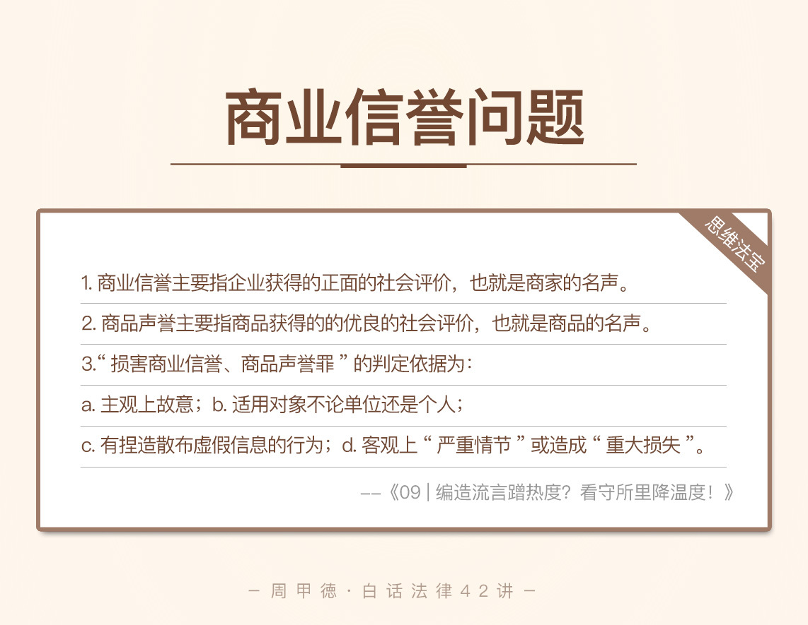

- 00 开篇词 这年头，你真应该懂点法律常识.md
- 01 “老周，我想知道” 常见法律认知盲区（一）.md
- 02 “老周，我想知道” 律师就在你身边（二）.md
- 03 “老周，我想知道” 律师就在你身边（三）.md
- 04 “老周，我想知道” 律师就在你身边（四）.md
- 05 创业未捷老板跑，社保工资哪里讨？.md
- 06 保密还是“卖身”，霸王条款怎么看？.md
- 07 编造流言蹭热度？看守所里降温度！.md
- 08 合同在手欠款难收，报警有用吗？.md
- 09 致创业：谁动了我的股权？.md
- 10 又见猝死！工“殇”究竟是不是工伤？.md
- 11 期权的“前世今生”.md
- 12 裁员面前，你能做的还有什么？.md
- 13 抄袭、盗图为什么做不得？.md
- 14 加班、工资、休假，你知道多少？.md
- 15 受贿原来这么“容易”.md
- 16 今天你用“VPN”了吗？.md
- 17 漏洞在眼前，可以悄悄破解吗？.md
- 18 “爬虫”真的合法吗？.md
- 19 非法集资到底是个啥？.md
- 20 黄色网站？不仅仅是“黄色”罪名.md
- 21 谁修改了我的积分资产？.md
- 22 外挂真能大吉大利吗？.md
- 23 如何看待“从删库到跑路”？.md
- 24 “伪基站”是你的避风港吗？.md
- 25 “网络诈骗”真的离你很远吗？.md
- 26 智斗中介：“北上广”租房图鉴.md
- 27 买买买！买房的“避坑”指南.md
- 28 闪婚又闪离，彩礼怎么理？.md
- 29 离婚还想和平？你要这么做.md
- 30 遗产继承的爱恨情仇.md
- 31 骗术升级？假结婚、假离婚的那些事儿.md
- 32 孩子学校受伤，谁之过？.md
- 33 如何让欠债还钱真正“天经地义”？.md
- 34 从透支到盗刷：人人须知的银行卡纠纷.md
- 35 远离“套路贷”的套路大全.md
- 36 危险！酒驾为什么被罚那么重？.md
- 37 老人倒地，“扶”“不服”？.md
- 38 “能动手就别吵吵”，代价你真的知道吗？.md
- 39 发生交通事故，如何处理？.md
- 40 交通事故综合法宝.md
- 41 婚姻家庭综合法宝.md
- 42 买卖房屋综合法宝.md
- 一键直达 法律专栏“食用”指南.md
- 加餐 “新冠肺炎”影响下，17个常见法律问题解答.md
- 结束语 法律，不会终止的篇章.md
07 编造流言蹭热度？看守所里降温度！
最近，我把手机上的很多新闻App都卸载了。为啥呢？因为这些软件里的各种自媒体，每天都要向我推送大量、既不喜欢也不需要的内容，严重妨碍我的阅读。今天说什么“西瓜注糖了不能吃”，明天又是“鸡蛋和牛奶共饮会中毒”，诸如此类，乱七八糟的，看着就烦。
大概你会和我有相同的声音：我只想看点儿新闻呀，这都什么玩意儿啊？找一个纯粹点的新闻客户端怎么就这么难啊！
没办法，在这个信息化的时代，流量驱动下，越来越多的商家打广告都是用奇葩内容来吸引眼球、增加热度，管也管不了，只能我们自己修炼出“火眼金睛”。
但是如果有人发的内容是假的，还严重损害了别人的利益，这个人还能继续嚣张吗？
比如，这个曾在新闻上轰动一时的真实案件。出于习惯，我还是用化名，小赵来指代主人公。
在这个人人皆是自媒体的时代，小赵也不甘落后，拥有微信公众号“你不知道的创业故事”，主要介绍一些知名企业的发展故事。因为内容没啥亮点，公众号本身的粉丝数和阅读量都也不算高。
为了制造所谓“爆款”，小赵跟人学了一招，从网上找了大量涉及“xx山泉质量问题”的图片，然后拼凑编造。最终，一篇名为《XX山泉停产，市面上所售90%都是自来水造假？！》的文章在其公众号上诞生了。
小赵如愿以偿，文章点击过十万，并在微信上迅速转发起来。公众号总算是有了爆款，但是，对该公司来说完全是个灾难。虚假信息带来的恐慌直接导致了产品滞销、大量经销商退货等，经查实，公司总共损失多达93.7万余元！
接近百万元的损失，不能说是小打小闹了。相信你也好奇：
小赵会因此受到惩罚吗？会是怎样的惩罚呢？
诸如此类的行为，又会有怎样的后果呢？
你可以自己先想想看。当然，在进入分析之前，我们先来了解几个法律概念：商业信誉和商品声誉。
法律知识
我们知道，平常如果我编瞎话去骂某个人，那叫做败坏了别人的名声。同样的，如果编瞎话骂的是别人的生意，自然也是败坏了生意上的名声。
事实上，法律上有专门的几个名词，用来定义这样的行为，我们逐个来看。
第一个概念叫做商业信誉，比较好理解，是指企业在商业上获得的正面的社会评价，说白了也就是商家的名声，主要包括其经济能力、信用等方面。我们日常所说的口碑、招牌等就是商业信誉。
如果说我们向工商部门虚假投诉说吃了某家火锅导致住院、或是在社交平台恶意造谣某家美容院服务差的，损害的都是其商业信誉。
另一个概念叫做商品声誉，区分开刚刚讲到的商业信誉，类比可知，是指商品获得的的优良的社会评价，也就是商品的名声，主要包括商品的性能、品质等方面。我们说保时捷xx型跑车性能优异、HHKB键盘是退烧神器，这些说的都是商品声誉。
如果恶意捏造并散布流言，以破坏某企业或商品的名声，便属于损害商业信誉、商品声誉。因为商品与商业本身紧密联系，二者通常也是“同病相怜”，一个行为很可能对商业信誉、商品声誉都构成损害。
不要小看这个罪名。如果损害了别人的商业信誉、商品声誉，情节很严重或是造成重大损失的，可能需要承担刑事责任。
情景分析
现在来看新闻中的小赵，自然应受到惩罚。他利用公众号的便利，故意捏造了“某某山泉破产”的假新闻，污蔑其产品作假，并且大范围地传播了出去，严重损害了该公司的名声。同时，公司损失近百万，属于重大损失。
小赵已然构成损害商业信誉、商品声誉罪。
事实上，小赵确实因为这个罪名，被判了六个月的大牢，还被罚了5000元。
可以看出，在判断是否构成了损害商业信誉、商品声誉罪时，我们需要注意这么几点：
主观上是故意的、甚至是恶意的；
这一犯罪的主体为所有人，也就是说不管你是某个单位还是仅作为个人，只要犯了这个罪，都会被惩罚。
行为上确实捏造并散布了虚假的信息，损害了别人的商业信誉和商品声誉；
客观上有“严重情节”或带来了“重大损失”。
判断时，以上四点缺一不可。
不过需要注意的是，第四点中，“严重情节”是指在这一过程中手段特别恶劣，比如故意捏造事实，多次在网上散布谣言的行为，再比如多次在公共场所故意砸毁商家商品的行为。关于这一点，主要还是结合具体情况，根据查证的事实来综合认定。
而“重大损失”的定义就比较广泛了，可能是直接的营业损失，也可能是信用受损而导致的一系列潜在损失，如产品积压、订单受损等。通常造成的直接损失在50万元以上，便属于重大损失。
小赵当初想得其实很简单，就是制造点爆炸性新闻，吸引流量。但实际上，传播越广，关注的人越多，他的罪行就会越严重。
其实职场上很常见的还有这么一种情况。
比如说刚跳槽离职的员工小吴，因为离职手续办理不顺利，对公司严重不满，就在微博上指名道姓地开骂，要么发些侮辱谩骂的话来泄愤，要么捏造些“莫须有”的过错来污蔑。
然而，这种看似常见的小事，可能也会构成犯罪。
如果浏览、转发数比较少，也就是我们法律上所说的传播量较小，还没太大的影响。即使收到公司的警告或律师函，只要及时删帖，公司也不会过多追究。
可如果一旦“火”了，对公司造成了较大的损失，公司是一定会说“stop”并且要求赔偿的！到时候的和警告和律师函就不是删帖能搞定的了。当然，是否要追究小吴的刑事问题，就要看取证情况了。
不管怎么说，做了这种事的小吴，都得不偿失。
思维“法”宝
最后，我们把今天的内容来总结一下。
我们知道了商业信誉和商品声誉这两个词，分别是指商家和商品的名声。而相关的罪名，即“损害商业信誉、商品声誉罪”，也有相应的判定依据：
主观上是故意的 ；
适用对象不论单位还是个人；
存在捏造散布虚假信息的行为；
客观上有“严重情节”或造成“重大损失”。

- 互联网高度普及的今天，网络必然不是法外之地。在网上我们同样也要遵纪守法，不能随便编造谣言，不要轻易打开潘多拉的魔盒。当然，如果是公司严重侵害了你的利益，也别打碎牙往肚里吞。反抗是必须反抗的，但千万记住“理性”二字，可以先找公司协商，也可以直接咨询律师，依法维权。
切不可一时“网络冲动”，虽然制造了大新闻，却也让自已出了大事，进了“牢房”。
关于今天的内容就说到这，我有一个小作业要留给你。还记得前不久很火的“葛优躺”事件吗，最终葛优是以什么名义来维权的呢？如果是我们个人的名声受到了损害，我们又该怎么办呢？请积极留言说出你的答案！
© 2019 - 2023 Liangliang Lee. Powered by gin and hexo-theme-book.